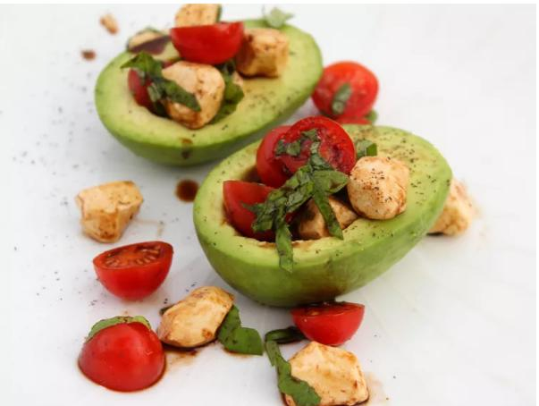

Caprese Stuffed Avocado

Description:
Garlic, Parmesan cheese, fresh basil, and toasted nuts turn brown rice into a superstar stuffing in this Italian-inspired stuffed tomato side dish that's cooked in the air fryer.
Ingredients:
- 1 avocado - peeled, pitted, and cut in half
- 1/4 cup fresh mozzarella pearls
- 1/4 cup cherry tomatoes, halved
- 6 fresh basil leaves, thinly sliced
- 1 tablespoon balsamic vinegar
- salt and pepper to tastes
Steps:
- Arrange avocado halves onto a plate.
- Toss together mozzarella pearls, cherry tomatoes, and basil in a small bowl. Spoon the Caprese filling into each avocado half and drizzle with balsamic vinegar. Season with salt and pepper. Serve immediately.